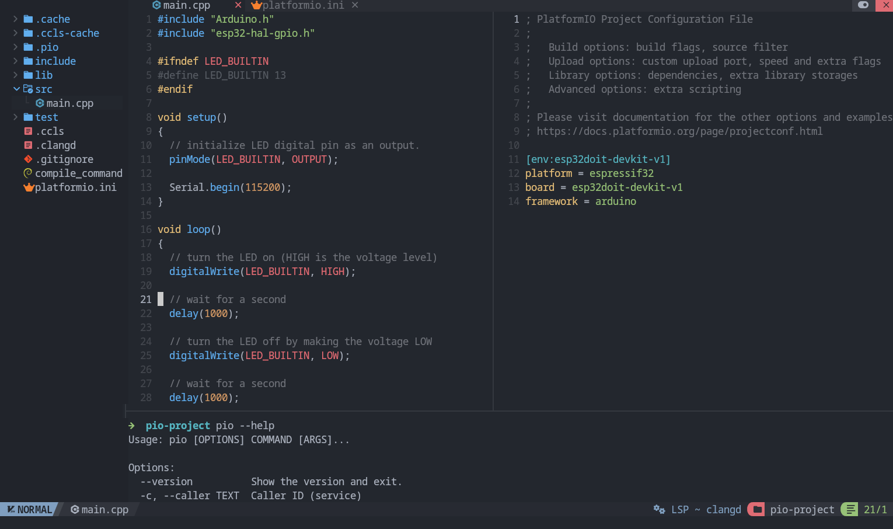

Neovim
Neovim is a powerful, open-source and configurable text editor based on Vim. Neovim is designed for use both from a command-line interface and as a standalone application in a graphical user interface.

Project Generation
Open system Terminal and install PlatformIO Core (CLI) if you haven’t already
Create new folder for your project and change directory (
cd) to itGenerate a project using PlatformIO Core Project Generator
Choose board ID using pio boards or Embedded Boards Explorer
command and generate project via the following command:
pio project init --board <ID>
Language Server
IDE features like completion, diagnostics and navigation are provided by language servers like clangd or ccls. When cross compiling for embedded architectures, language servers require some metadata to understand target architecture, system include paths and libraries. This metadata can be generated by PlatformIO.
Neovim supports LSP (Language Server Protocol) natively.
Language Servers can be installed manually or using Mason.
You can configure and enable them using vim.lsp.config() and vim.lsp.enable().
clangd
Install clangd via Mason or install manually ensuring it is in your PATH
You must launch clangd with the option --query-driver.
This is an allowlist that tells clangd which paths it is allowed to query a compiler in.
Often clangd executes the compiler itself with some options,
then the output is parsed to get target architecture and system include directories.
This greatly improves support for embedded GCC toolchains.
Since this executes arbitrary binaries, you should only whitelist directories that you trust.
--query-driver=<string> - Comma separated list of globs for white-listing gcc-compatible drivers that are safe to execute. Drivers matching any of these globs will be used to extract system includes. e.g. /usr/bin/**/clang-*,/path/to/repo/**/g++-*
local clangd_allowlist = {
vim.env.HOME .. '/.platformio/packages/toolchain-*/bin/*',
'/usr/bin/*', -- if you want to allow all compilers installed here
-- you can add other compiler directories here
}
---@type vim.lsp.Config
local clangd_config = {
cmd = {
'clangd',
'--query-driver=' .. table.concat(clangd_allowlist, ','),
},
reuse_client = function(client, config)
-- Neovim runs this function to decide whether an existing lsp client can be reused when you open a new buffer
-- you can add custom logic here for when to actually reuse client instead of spawning a new one
-- for example, only reuse client when working in PlatformIO projects containing platformio.ini
--
-- By default, Neovim reuses client if name and root_dir matches
-- but when jumping into headers located outside the project, that isnt true
-- so here we are always using the same client to keep the context from compile_commands.json
-- for setups containing multiple unrelated C/C++ project you may want to add project specific logic instead
return true
end,
-- you can configure other options for clangd here
}
vim.lsp.config('clangd', clangd_config)
vim.lsp.enable('clangd')
Generate compile_commands.json in project root directory
pio run -t compiledb
Warning
You should regenerate compile_commands.json (using the above command) whenever:
Opening a project for the first time (either after generation by you or after cloning from a git repo or by any other means)
A new library is added in the project
A new source file is created in the project (not always necessary, but recommended)
compile_commands.json contains the exact compiler command that gets used when building.
Clangd may not recognize some GCC flags, and some additional flags may be required.
For this you may also want to create a .clangd file.
It is a YAML file that you can use to add or remove flags, and configure other project specific settings
For example: if you are getting errors similar to the following in Neovim
Diagnostics:
1. Unknown argument '-mlongcalls'; did you mean '-mlong-calls'? [drv_unknown_argument_with_suggestion]
2. Unknown argument: '-fstrict-volatile-bitfields' [drv_unknown_argument]
3. Unknown argument: '-fno-tree-switch-conversion' [drv_unknown_argument]
Create a .clangd file in the project root directory with the flags that are giving you errors
CompileFlags:
Remove:
- "-mlongcalls"
- "-fstrict-volatile-bitfields"
- "-fno-tree-switch-conversion"
Note
This only removes clangd errors in the editor. The compiler command during build is unaffected.
You can also create
~/.config/clangd/config.yamlwhich sets global clangd defaults for all projects
See Clangd and Neovim documentation for more information:
Clangd System Headers and the section
Query-driverClangd Compile Commands and the section
Query-driverClangd Configuration and the section
CompileFlags
ccls
Manually install ccls and make sure it is in your PATH or install via Mason if available. Then configure and enable the ccls server in your Neovim config:
---@type vim.lsp.Config
local ccls_config = {
filetypes = { 'c', 'cpp', 'objc', 'objcpp', 'cuda', 'h' },
-- you can configure other options for the ccls server here
}
vim.lsp.config('ccls', ccls_config)
vim.lsp.enable('ccls')
Generate .ccls in project root directory
pio project init --ide vim
Warning
You should regenerate .ccls (using the above command) whenever:
Opening a project for the first time (either after generation by you or after cloning from a git repo or by any other means)
A new library is added in the project
A new source file is created in the project (not always necessary, but recommended)
Useful Commands
Build (without uploading)
pio run
Build and Upload (if no error)
pio run --target upload
Serial Monitor
pio device monitor -b <baud rate>